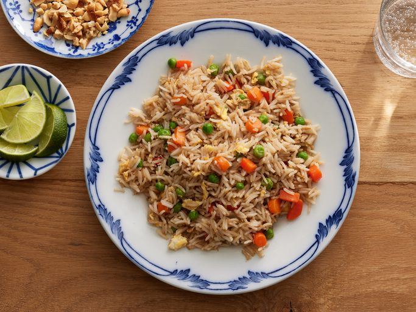

Fried Rice

Fried rice is a great meal or side dish and a wonderful way to use
leftover rice. This staple food is amzing on its own or paired with
other foods, you can't go wrong with fried rice!
Ingredients
- 2/3 cup chopped baby carrots
- 1/2 cup frozen green peas
- 2 tablespoons vegetable oil
- 1 clove garlic, minced
- 2 large eggs
- 3 cups leftover cooked white rice
- 1 tablespoon soy sauce
- 2 teaspoons sesame oil
Directions
- Step 1: Assemble ingredients.
- Step 2: Place carrots in a small saucepan and cover with water.
Bring to a low boil and cook for 3 to 5 minutes. Stir in peas,
then immediately drain in a colander.
- Step 3: Heat a wok over high heat. Pour in vegetable oil,
then stir in carrots, peas, and garlic; cook for about 30 seconds.
Add eggs; stir quickly to scramble eggs with vegetables.
- Step 4: Stir in cooked rice. Add soy sauce and toss rice to coat.
Drizzle with sesame oil and toss again.
- Step 5: Serve hot and enjoy!
Recipe List